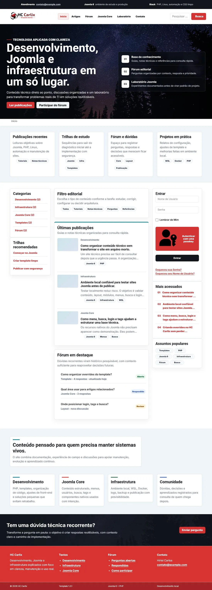
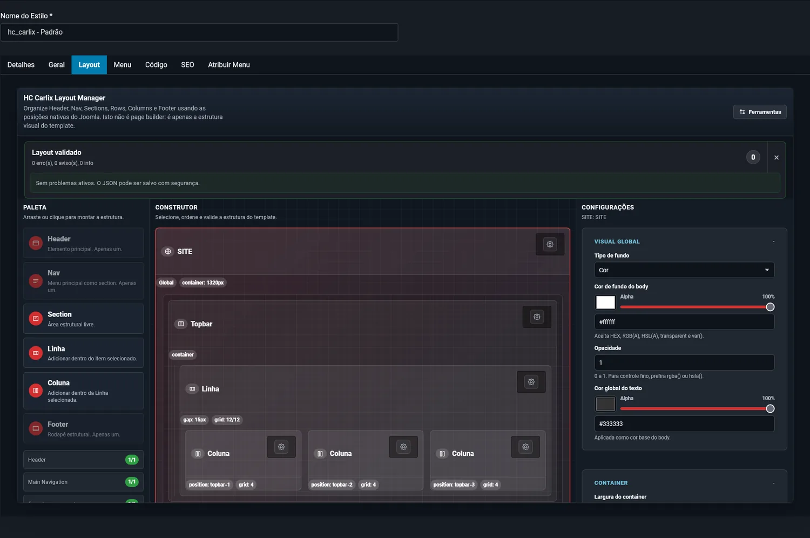
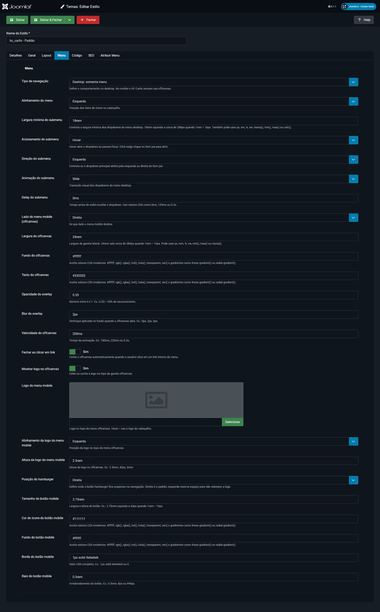
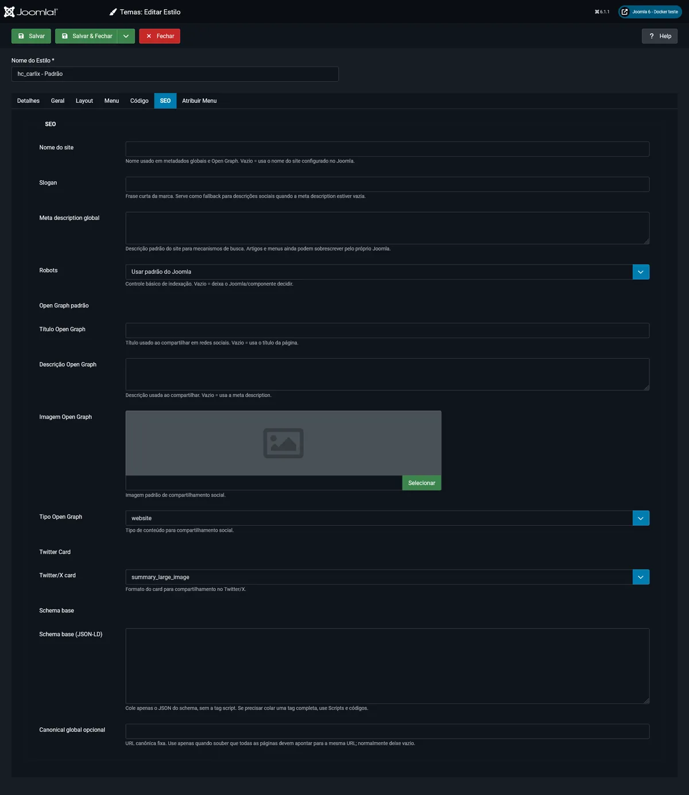

Problema
Organizar a camada visual sem page builder
O template não substitui artigos, menus, módulos ou componentes. Ele organiza esses elementos dentro de uma base visual controlável.
Template Joomla · Open Source
Template Joomla moderno para projetos institucionais

Visão geral
O HC Carlix é um template Joomla desenvolvido para organizar a camada visual de projetos institucionais. A proposta é manter estrutura, apresentação, comportamento e administração em responsabilidades claras, usando recursos nativos do CMS e uma base organizada para manutenção.
Seções da página
Problema e uso
Problema
O template não substitui artigos, menus, módulos ou componentes. Ele organiza esses elementos dentro de uma base visual controlável.
Público
Voltado a sites que precisam de estrutura previsível, posições documentadas, frontend leve e manutenção clara no administrator.
Casos de uso
Útil para bases corporativas, portais, sites de governo, educação e projetos que exigem padronização visual com manutenção controlada.
Recursos reais
Frontend
CSS nativo com custom properties, grid próprio de 12 colunas, fontes self-hosted e JavaScript puro.
Joomla
Web Asset Manager para CSS e JavaScript, posições, módulos, menus, parâmetros reais e chromes próprios.
Layout Manager
Organiza SITE, Header, Nav, Section, Row, Column, Footer, componente, navegação e posições de módulo.
Responsividade
Configuração de grid para phone, largePhone, tablet, smallDesktop, largeDesktop e extraLargeDesktop.
Menu
Configurações para navegação principal, alinhamento, submenu, botão mobile e painel offcanvas.
SEO
Metadados, Open Graph, Twitter/X Card, Schema, canonical e campos de códigos adicionais no administrator.
Segurança
Valida estrutura obrigatória, limites de itens, soma de colunas e fallback quando o JSON está vazio ou inválido.
Idiomas
Arquivos de idioma para interface, parâmetros e textos administrativos do template.
Extensão
Overrides de mod_menu e chromes de módulo card e plain.
Capturas reais
Os registros abaixo foram produzidos no ambiente local usado no desenvolvimento e na documentação do DEV & Versos #16/2026.



Arquitetura
O projeto separa estrutura Joomla, apresentação, comportamento e interface administrativa. O fluxo nasce no manifesto, passa pelos assets e pelo Layout Manager, e termina no index.php renderizando posições reais do Joomla.
Base do template
Camadas
Instalação
Obtenha tpl_hc_carlix.zip na release oficial 1.2.1.
No Joomla, acesse Sistema, Instalar e Extensões, e envie o pacote ZIP.
Abra Sistema, Templates, Estilos do site, selecione HC Carlix e defina o estilo do projeto.
Revise Layout, Menu, Código, SEO, posições de módulo e atribuição de menu antes de publicar.
Para ensinar o fluxo, comece pelo frontend, abra o estilo no administrator, revise os arquivos principais, configure o Layout Manager, teste menu/offcanvas, valide SEO e finalize com checklist de publicação.
Releases
Fonte: esta página pública aponta para a release estável 1.2.1.
Artigo relacionado

Artigo técnico dedicado
O artigo apresenta o fluxo do template do manifesto ao frontend, detalha o Layout Manager, menu e offcanvas, SEO, códigos e integrações, segurança, performance e checklist de publicação.
Ler DEV & Versos #16/2026 ↗Consulte o código, a release, o artigo técnico e o HUB principal de produtos Joomla.